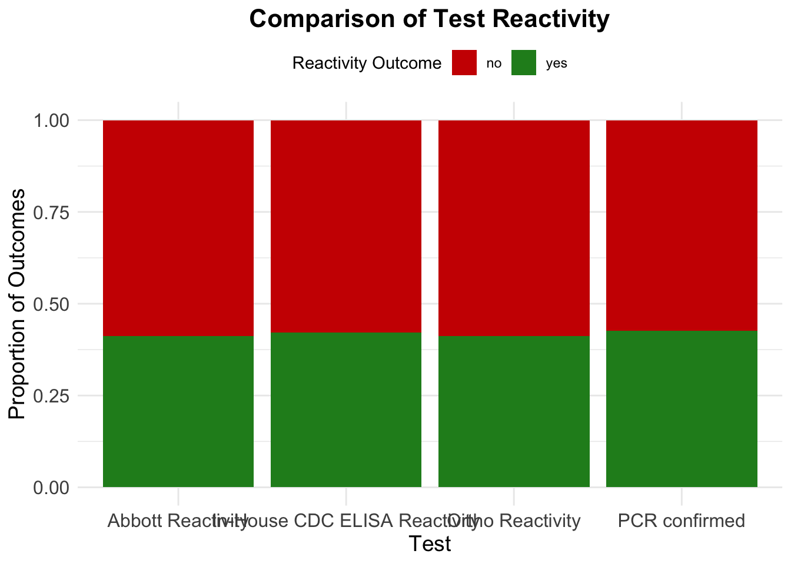

This data is from the CDC website, link here. It shows information from information from recent serological tests on SARS-CoV-2 samples that examine positivity, reactivity, and anitbody counts. Specifically, it examines whether different tests determine if samples test positive or negative using different types of covid tests. The mNT titer level represents the most dilute possible solution of anitbody to neutralize the virus.
To start, I’ll load packages and the data. Looking at the structure of the data, we can see there’s 204 obersvatinos and 14 variables. We will not look at all the vairables, so let’s choose the ones we want.
library(tidyverse)
── Attaching core tidyverse packages ──────────────────────── tidyverse 2.0.0 ──
✔ dplyr 1.1.4 ✔ readr 2.1.5
✔ forcats 1.0.0 ✔ stringr 1.5.1
✔ ggplot2 3.5.0 ✔ tibble 3.2.1
✔ lubridate 1.9.4 ✔ tidyr 1.3.1
✔ purrr 1.0.2
── Conflicts ────────────────────────────────────────── tidyverse_conflicts() ──
✖ dplyr::filter() masks stats::filter()
✖ dplyr::lag() masks stats::lag()
ℹ Use the conflicted package (<http://conflicted.r-lib.org/>) to force all conflicts to become errors
library(here)
here() starts at C:/Pooja/Pooja/Spring 2025/EPID-BIOS-8060E-MADA/annalisecramer-MADA-portfolio
data <-read_csv(here("cdcdata-exercise", "Examination_of_SARS-CoV-2_serological_test_results_from_multiple_commercial_and_laboratory_platforms_with_an_in-house_serum_panel_20250205.csv"))
Rows: 204 Columns: 14
── Column specification ────────────────────────────────────────────────────────
Delimiter: ","
chr (4): PCR confirmed, Abbott Reactivity, Ortho Reactivity, In-House CDC E...
dbl (10): Sample #, Abbott S/C Values, Abbott S/C Values (Log10), Ortho Inde...
ℹ Use `spec()` to retrieve the full column specification for this data.
ℹ Specify the column types or set `show_col_types = FALSE` to quiet this message.
Next, let’s explore the variable for PCR confirmed. This variable is either negative or positive.
unique(data2$`PCR confirmed`)
[1] "Pos" "Neg"
count_table <-table(data2$`PCR confirmed`) #table of countspercentage_table <-prop.table(count_table) *100#table of percentagescbind(count_table, round(percentage_table, 2)) #combine them
count_table
Neg 117 57.35
Pos 87 42.65
Now we will look at the Abbott Reactivity vairable. There are two values, Reactive and Non-Reactive.
unique(data2$`Abbott Reactivity`)
[1] "Reactive" "Non-reactive"
count_table <-table(data2$`Abbott Reactivity`) #table of countspercentage_table <-prop.table(count_table) *100#table of percentagescbind(count_table, round(percentage_table, 2)) #combine them
Next, let us examine Ortho Reactivity. There are two values, Reactive and Non-Reactive.
unique(data2$`Ortho Reactivity`)
[1] "Reactive" "Non-reactive"
count_table <-table(data2$`Ortho Reactivity`) #table of countspercentage_table <-prop.table(count_table) *100#table of percentagescbind(count_table, round(percentage_table, 2)) #combine them
Now, let us examine mNT TITER (Log10). This is not a character variable, it is numerical with continuous responses that ranger between 1 and 4. Many samples have a value of 1.
Returning to the different types of tests, we know most of these have the same results across samples. However, a few are different. I used AI to help write the code for reshpaing and plotting the data. We can see they arre very close.
data3 <- data2 %>%#change the test data to all the same answersmutate(`PCR confirmed`=recode(`PCR confirmed`, "Pos"="yes", "Neg"="no")) %>%mutate(`Abbott Reactivity`=recode(`Abbott Reactivity`, "Reactive"="yes", "Non-reactive"="no")) %>%mutate(`Ortho Reactivity`=recode(`Ortho Reactivity`, "Reactive"="yes", "Non-reactive"="no")) %>%mutate(`In-House CDC ELISA Reactivity`=recode(`In-House CDC ELISA Reactivity`, "Reactive"="yes", "Non-reactive"="no"))# Reshape the dataset to long format for easy plottingdata3_long <- data3 %>%gather(key ="Test", value ="Outcome", `PCR confirmed`, `Abbott Reactivity`, `Ortho Reactivity`, `In-House CDC ELISA Reactivity`)# Ensure that Outcome is a factor with the correct levelsdata3_long$Outcome <-factor(data3_long$Outcome, levels =c("no", "yes"))# Create a stacked bar plotggplot(data3_long, aes(x = Test, fill = Outcome)) +geom_bar(position ="fill") +# Position 'fill' normalizes the height to proportionslabs(title ="Comparison of Test Reactivity",x ="Test",y ="Proportion of Outcomes",fill ="Reactivity Outcome" ) +scale_fill_manual(values =c("no"="red3", "yes"="forestgreen")) +theme_minimal() +theme(plot.title =element_text(hjust =0.5, size =16, face ="bold"),axis.title =element_text(size =14),axis.text =element_text(size =12),legend.position ="top" )

This section contributed by Pooja Gokhale. Based on the give data, I used an AI prompt to give me the code to generate synthetic data. I used the counts and percentages from the original data. For mNT Titer Log10, we will compute the mean and range.
mean(data2$`mNT TITER (Log10)`)
[1] 1.625027
sd(data2$`mNT TITER (Log10)`)
[1] 0.8635054
range(data2$`mNT TITER (Log10)`)
[1] 1.0000 3.7748
Using these, I got the folllowing code. The code was set to produce 200 observations. In the original dataset, about 125 out of 204 observations were in the range of 1, with others in the range of 2-3.7. So in the synthetic data, 60% of the values were assumed to be near 1 for mNT Titer Log10.
set.seed(123) # For reproducibility# Number of samplesn_samples <-200# Generate Sample Numbersample_number <-1:n_samples# Assign PCR Confirmed based on proportionspcr_confirmed <-sample(c("Pos", "Neg"), n_samples, replace =TRUE, prob =c(0.4265, 0.5735))# Assign Abbott Reactivity based on proportionsabbott_reactivity <-sample(c("Reactive", "Non-reactive"), n_samples, replace =TRUE, prob =c(0.4118, 0.5882))# Assign Ortho Reactivity based on proportionsortho_reactivity <-sample(c("Reactive", "Non-reactive"), n_samples, replace =TRUE, prob =c(0.4118, 0.5882))# Assign In-house CDC ELISA Reactivity based on proportionsinhouse_cdc_elisa <-sample(c("Reactive", "Non-reactive"), n_samples, replace =TRUE, prob =c(0.4216, 0.5784))# Generate mNT Titer (log10) values following the required distributionmnt_titer <-c(rnorm(120, mean =1.2, sd =0.2), # ~125 values near 1rnorm(80, mean =2.8, sd =0.4) # ~79 values in the 2-3.77 range)# Ensure values stay within the expected rangemnt_titer[mnt_titer <1] <-1# Clamp minimum to 1mnt_titer[mnt_titer >3.7748] <-3.7748# Clamp maximum to 3.7748# Adjust mean and SD to match the target valueswhile (abs(mean(mnt_titer) -1.625) >0.01||abs(sd(mnt_titer) -0.8635) >0.01) { mnt_titer <-scale(mnt_titer) *0.8635+1.625# Rescale to match mean & SD mnt_titer[mnt_titer <1] <-1 mnt_titer[mnt_titer >3.7748] <-3.7748}# Shuffle the values to randomize ordermnt_titer <-sample(mnt_titer, n_samples, replace =FALSE)# Combine into a data framesynthetic_data <-data.frame(Sample_Number = sample_number,PCR_Confirmed = pcr_confirmed,Abbott_Reactivity = abbott_reactivity,Ortho_Reactivity = ortho_reactivity,Inhouse_CDC_ELISA = inhouse_cdc_elisa,mNT_Titer_Log10 = mnt_titer)write.csv(synthetic_data, "synthetic_data.csv", row.names =FALSE)
Now let us look at the summary of this synthetic data.
First. let’s look at PCR confirmed
count_table <-table(synthetic_data$PCR_Confirmed) #table of countspercentage_table <-prop.table(count_table) *100#table of percentagescbind(count_table, round(percentage_table, 2))
count_table
Neg 117 58.5
Pos 83 41.5
About 58% are Negative, and 42% are Positive, compared to 57.35% and 42.65% in the original dataset.
Now, let’s look at Abbott reactivity
count_table <-table(synthetic_data$Abbott_Reactivity) #table of countspercentage_table <-prop.table(count_table) *100#table of percentagescbind(count_table, round(percentage_table, 2)) #combine them
Here, 60.5% are non-reactive and 39.5% are Reactive, compared to 58.82% and 41.18% respectively in the original dataset.
Now, let’s look at Ortho reactivity
count_table <-table(synthetic_data$Ortho_Reactivity) #table of countspercentage_table <-prop.table(count_table) *100#table of percentagescbind(count_table, round(percentage_table, 2)) #combine them
This is similar to Abbott reactivity, like the original dataset.
Now, let’s look at In-House CDC Elisa reactivity
count_table <-table(synthetic_data$Inhouse_CDC_ELISA) #table of countspercentage_table <-prop.table(count_table) *100#table of percentagescbind(count_table, round(percentage_table, 2)) #combine them
We can see that the distribution of the mNT Titer Log10 in the synthetic data is very similar to that of the original dataset.
Now, let’s plot the data.
synthetic_data2 <- synthetic_data %>%#change the test data to all the same answersmutate(PCR_Confirmed =recode(PCR_Confirmed, "Pos"="yes", "Neg"="no")) %>%mutate(Abbott_Reactivity =recode(Abbott_Reactivity, "Reactive"="yes", "Non-reactive"="no")) %>%mutate(Ortho_Reactivity =recode(Ortho_Reactivity, "Reactive"="yes", "Non-reactive"="no")) %>%mutate(Inhouse_CDC_ELISA =recode(Inhouse_CDC_ELISA, "Reactive"="yes", "Non-reactive"="no"))# Reshape the dataset to long format for easy plottingsynthetic_data_long <- synthetic_data2 %>%gather(key ="Test", value ="Outcome", PCR_Confirmed, Abbott_Reactivity, Ortho_Reactivity, Inhouse_CDC_ELISA)# Ensure that Outcome is a factor with the correct levelssynthetic_data_long$Outcome <-factor(synthetic_data_long$Outcome, levels =c("no", "yes"))# Create a stacked bar plotggplot(synthetic_data_long, aes(x = Test, fill = Outcome)) +geom_bar(position ="fill") +# Position 'fill' normalizes the height to proportionslabs(title ="Comparison of Test Reactivity",x ="Test",y ="Proportion of Outcomes",fill ="Reactivity Outcome" ) +scale_fill_manual(values =c("no"="red3", "yes"="forestgreen")) +theme_minimal() +theme(plot.title =element_text(hjust =0.5, size =16, face ="bold"),axis.title =element_text(size =14),axis.text =element_text(size =12),legend.position ="top" )
Similar to the original dataset, approximately 38% of the outcome was Yes, while 62% was No.
Using the AI prompt, I was able to produce a synthetic dataset which was very similar to the original.